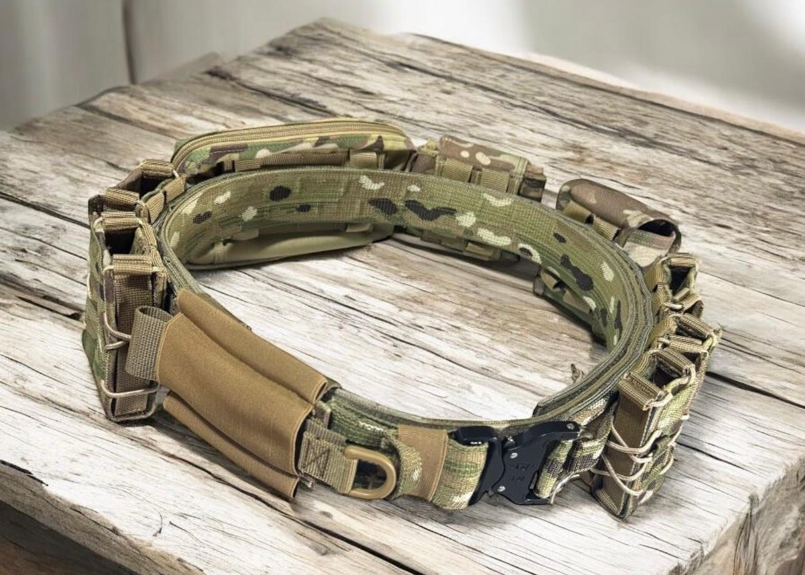
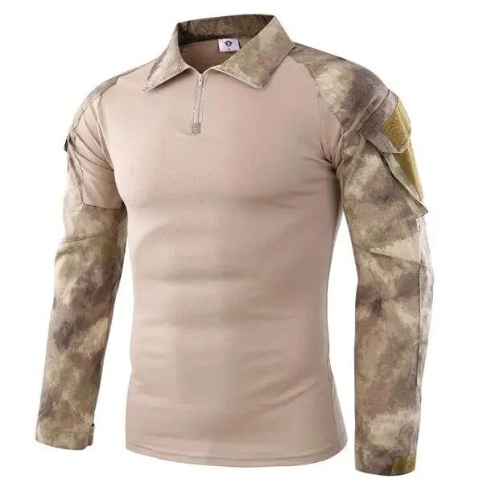
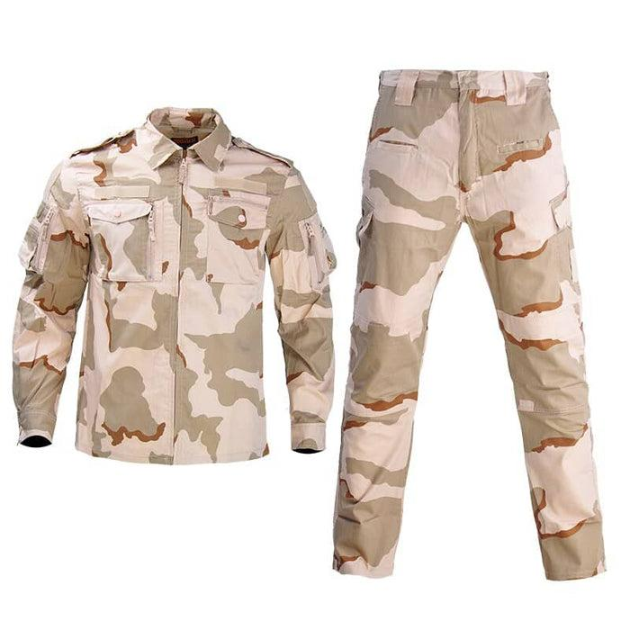
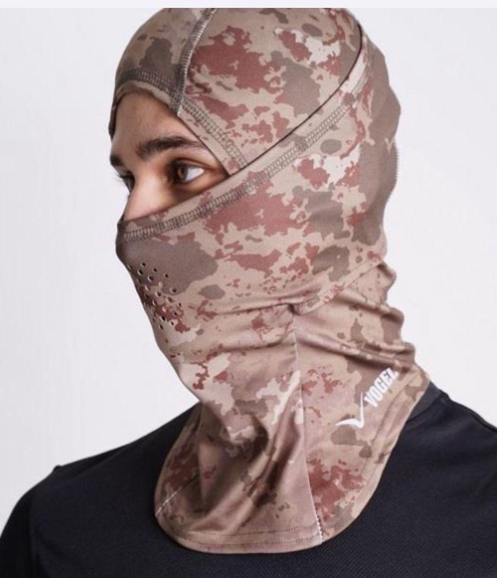
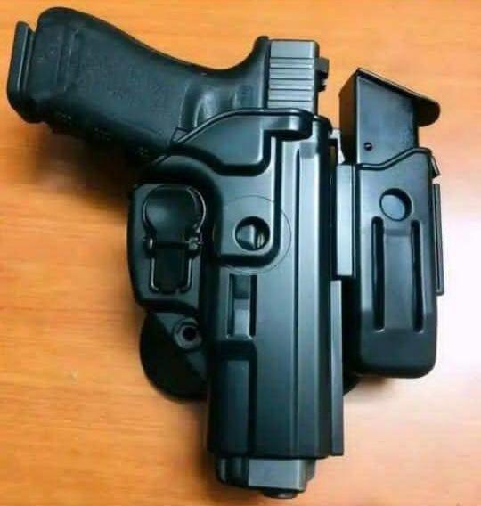
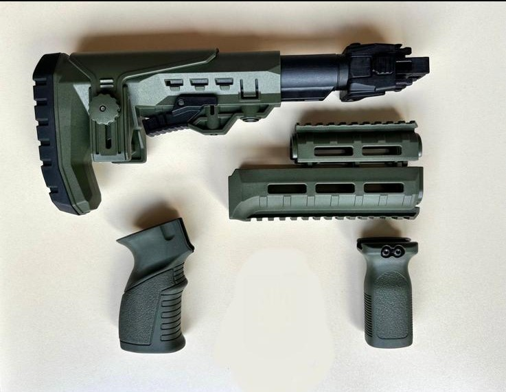
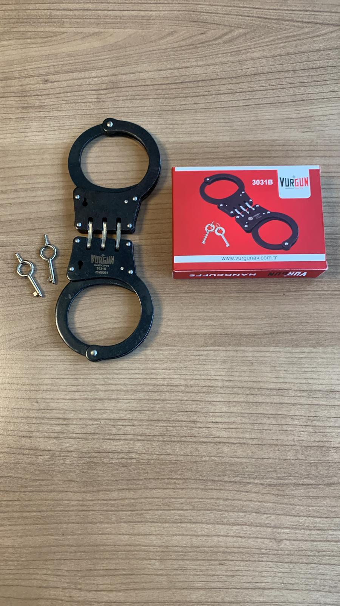

CATALOGUE DE TEXTILES ET D'ÉQUIPEMENTS TACTIQUES

Tenue de terrain résistante aux déchirures, conçue pour offrir un confort maximal dans les climats extrêmes africains.

T-shirts et polos ergonomiques à séchage rapide, idéals pour les opérations sous forte chaleur et l'usage quotidien des forces.

Tenue de terrain résistante aux déchirures, conçue pour offrir un confort maximal et une durabilité dans les climats extrêmes africains.

Casques tactiques, casquettes et cagoules d'intervention assurant un camouflage optimal et une protection faciale complète.

Étuis rigides et modulables pour un tirage rapide, garantissant une sécurisation parfaite de l'arme de poing en toute situation.

Viseurs de précision, poignées tactiques et systèmes de fixation conçus pour optimiser la manipulation et les performances balistiques.

Équipements de sécurité professionnels et menottes haute résistance, indispensables pour les forces de l'ordre et de sécurité.
Si le produit ou l'accessoire que vous recherchez ne figure pas dans notre liste standard, ne vous inquiétez pas. Grâce à notre vaste réseau de fabricants en Turquie, nous pouvons sourcer, développer et fournir des équipements tactiques sur mesure selon votre cahier des charges.